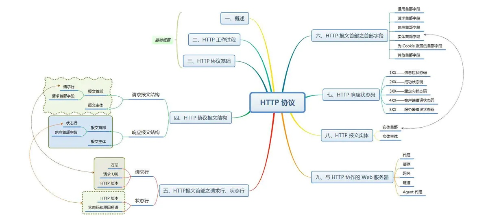
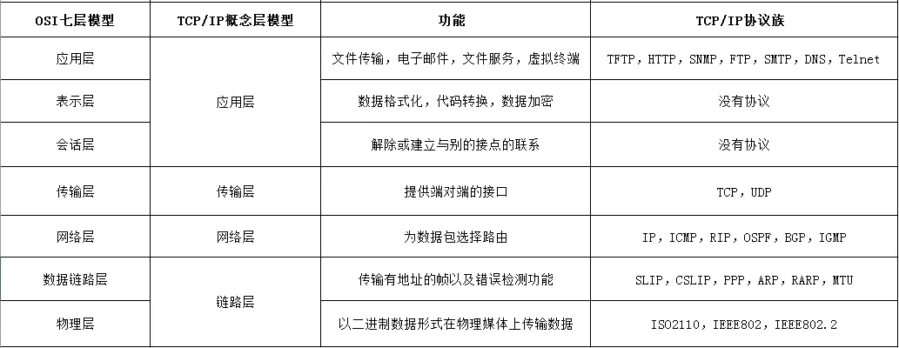
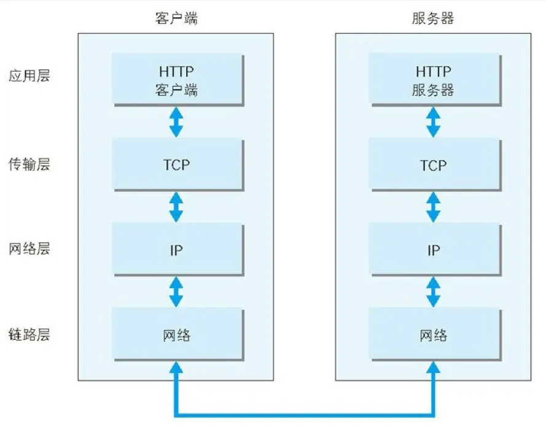
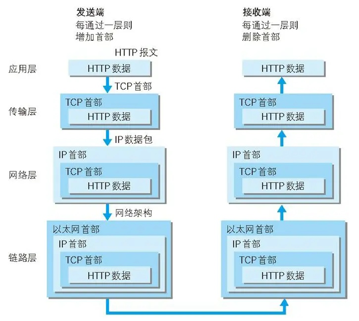
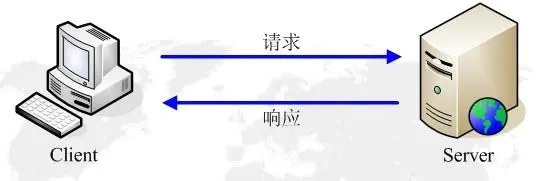
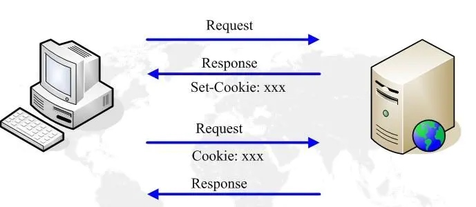
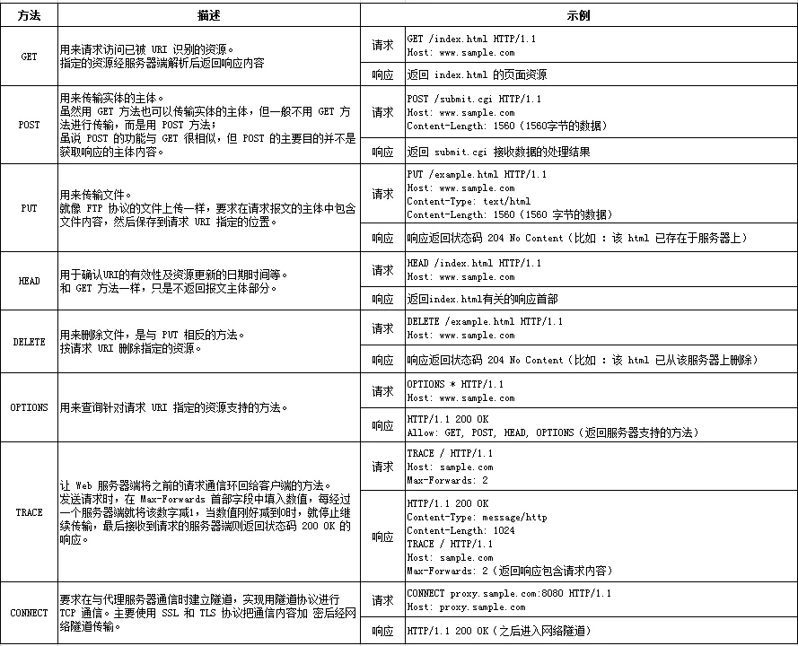

一、概述
1.计算机网络体系结构分层
网络体系结构分层
2.TCP/IP 通信传输流
利用 TCP/IP 协议族进行网络通信时，会通过分层顺序与对方进行通信。发送端从应用层往下走，接收端则从链路层往上走。如下：TCP/IP 通信传输流
首先作为发送端的客户端在应用层（HTTP 协议）发出一个想看某个 Web 页面的 HTTP 请求。
接着，为了传输方便，在传输层（TCP 协议）把从应用层处收到的数据（HTTP 请求报文）进行分割，并在各个报文上打上标记序号及端口号后转发给网络层。
接收端的服务器在链路层接收到数据，按序往上层发送，一直到应用层。当传输到应用层，才能算真正接收到由客户端发送过来的 HTTP请求。
如下图所示：HTTP 请求
在网络体系结构中，包含了众多的网络协议，这篇文章主要围绕 HTTP 协议（HTTP/1.1版本）展开。
HTTP协议（HyperText Transfer Protocol，超文本传输协议）是用于从WWW服务器传输超文本到本地浏览器的传输协议。它可以使浏览器更加高效，使网络传输减少。它不仅保证计算机正确快速地传输超文本文档，还确定传输文档中的哪一部分，以及哪部分内容首先显示(如文本先于图形)等。
二、HTTP 工作过程
HTTP请求响应模型
HTTP通信机制是在一次完整的 HTTP 通信过程中，客户端与服务器之间将完成下列7个步骤：
建立 TCP 连接
客户端向服务器发送请求命令
客户端发送请求头信息
服务器应答
服务器返回响应头信息
服务器向客户端发送数据
服务器关闭 TCP 连接
三、HTTP 协议基础
1.通过请求和响应的交换达成通信
应用 HTTP 协议时，必定是一端担任客户端角色，另一端担任服务器端角色。仅从一条通信线路来说，服务器端和客服端的角色是确定的。HTTP 协议规定，请求从客户端发出，最后服务器端响应该请求并返回。换句话说，肯定是先从客户端开始建立通信的，服务器端在没有接收到请求之前不会发送响应。
2.HTTP 是不保存状态的协议
HTTP 是一种无状态协议。协议自身不对请求和响应之间的通信状态进行保存。也就是说在 HTTP 这个级别，协议对于发送过的请求或响应都不做持久化处理。这是为了更快地处理大量事务，确保协议的可伸缩性，而特意把 HTTP 协议设计成如此简单的。
3.使用 Cookie 的状态管理
Cookie 技术通过在请求和响应报文中写入 Cookie 信息来控制客户端的状态。Cookie 会根据从服务器端发送的响应报文内的一个叫做 Set-Cookie 的首部字段信息，通知客户端保存Cookie。当下次客户端再往该服务器发送请求时，客户端会自动在请求报文中加入 Cookie 值后发送出去。服务器端发现客户端发送过来的 Cookie 后，会去检查究竟是从哪一个客户端发来的连接请求，然后对比服务器上的记录，最后得到之前的状态信息。
Cookie 的流程
4.请求 URI 定位资源
HTTP 协议使用 URI 定位互联网上的资源。正是因为 URI 的特定功能，在互联网上任意位置的资源都能访问到。
5.告知服务器意图的 HTTP 方法（HTTP/1.1）
HTTP 方法
6.持久连接
HTTP 协议的初始版本中，每进行一个 HTTP 通信都要断开一次 TCP 连接。比如使用浏览器浏览一个包含多张图片的 HTML 页面时，在发送请求访问 HTML 页面资源的同时，也会请求该 HTML 页面里包含的其他资源。因此，每次的请求都会造成无畏的 TCP 连接建立和断开，增加通信量的开销。
7.管线化
持久连接使得多数请求以管线化方式发送成为可能。以前发送请求后需等待并接收到响应，才能发送下一个请求。管线化技术出现后，不用等待亦可发送下一个请求。这样就能做到同时并行发送多个请求，而不需要一个接一个地等待响应了。